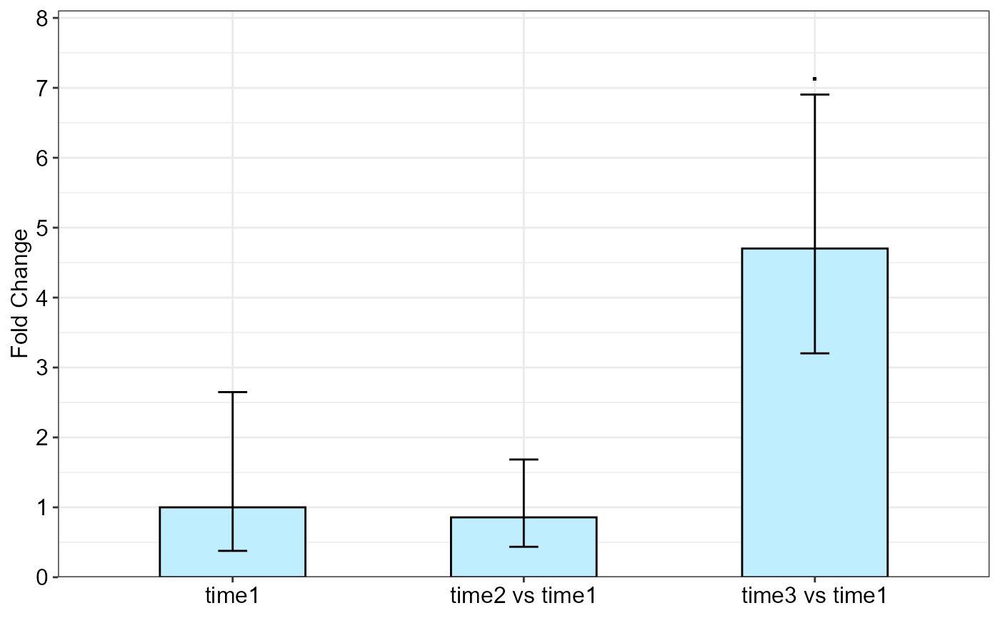
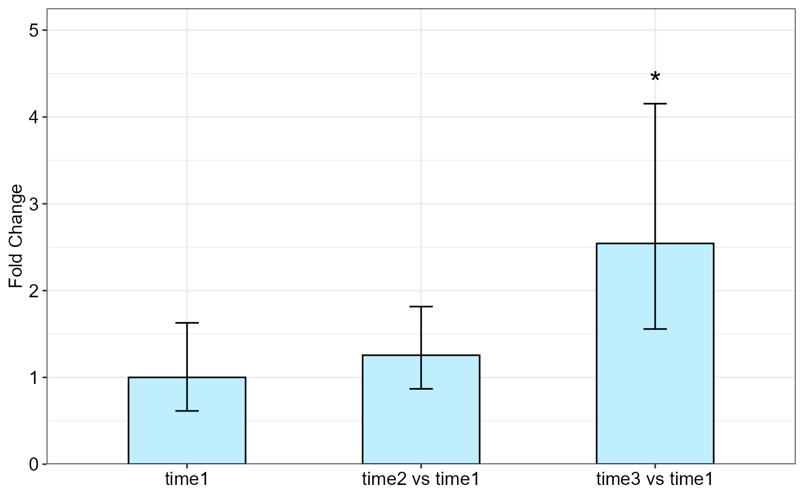

R/qpcrREPEATED.r
qpcrREPEATED.RdqpcrREPEATED function performs fold change (\(\Delta \Delta C_T\) method)
analysis of observations repeatedly taken over different time courses.
Data may be obtained over time from a uni- or multi-factorial experiment. The bar plot of the fold changes (FC)
values along with the standard error (se) or confidence interval (ci) is also returned by the qpcrREPEATED function.
qpcrREPEATED(
x,
numberOfrefGenes,
factor,
block,
width = 0.5,
fill = "#BFEFFF",
y.axis.adjust = 2,
y.axis.by = 1,
ylab = "Fold Change",
xlab = "none",
fontsize = 12,
fontsizePvalue = 7,
axis.text.x.angle = 0,
axis.text.x.hjust = 0.5,
x.axis.labels.rename = "none",
letter.position.adjust = 0,
p.adj = "none",
errorbar = "se",
plot = TRUE
)input data frame in which the first column is id,
followed by the factor column(s) which include at least time.
The first level of time in data frame is used as calibrator or reference level.
Additional factor(s) may also be present. Other columns are efficiency and Ct values of target and reference genes.
NOTE: In the "id" column, a unique number is assigned to each individual from which samples have been taken over time,
for example see data_repeated_measure_1,
all the three number 1 indicate one individual which has been sampled over three different time courses.
See vignette, section "data structure and column arrangement" for details.
number of reference genes which is 1 or 2 (Up to two reference genes can be handled). as reference or calibrator which is the reference level or sample that all others are compared to. Examples are untreated of time 0. The FC value of the reference or calibrator level is 1 because it is not changed compared to itself. If NULL, the first level of the main factor column is used as calibrator.
the factor for which the FC values is analysed. The first level of the specified factor in the input data frame is used as calibrator.
column name of the block if there is a blocking factor (for correct column arrangement see example data.). Block effect is usually considered as random and its interaction with any main effect is not considered.
a positive number determining bar width in the output bar plot.
specify the fill color for the columns in the bar plot. If a vector of two colors is specified, the reference level is differentialy colored.
a negative or positive value for reducing or increasing the length of the y axis.
determines y axis step length
the title of the y axis
the title of the x axis
font size of the plot
font size of the pvalue labels
angle of x axis text
horizontal justification of x axis text
a vector replacing the x axis labels in the bar plot
adjust the distance between the signs and the error bars.
Method for adjusting p values
Type of error bar, can be se or ci.
if FALSE, prevents the plot.
A list with 5 elements:
Input data frame plus the weighted Delat Ct values (wDCt)
lm of factorial analysis-tyle
ANOVA table
Table of FC values, significance, confidence interval and standard error with the lower and upper limits for the selected factor levels.
Bar plot of the fold change values for the main factor levels.
The qpcrREPEATED function performs fold change (FC) analysis of observations repeatedly taken over time.
The intended factor (could be time or any other factor) is defined for the analysis by the factor argument,
then the function performs FC analysis on its levels
so that the first levels (as appears in the input data frame) is used as reference or calibrator.
The function returns FC values along with confidence interval and standard error for the FC values.
qpcrREPEATED(data_repeated_measure_1,
numberOfrefGenes = 1,
factor = "time", block = NULL)
#> Warning: The level 1 of the selected factor was used as calibrator.
#> Type III Analysis of Variance Table with Satterthwaite's method
#> Sum Sq Mean Sq NumDF DenDF F value Pr(>F)
#> time 11.073 5.5364 2 4 4.5382 0.09357 .
#> ---
#> Signif. codes: 0 '***' 0.001 '**' 0.01 '*' 0.05 '.' 0.1 ' ' 1
#>
#> Fold Change table
#> contrast FC pvalue sig LCL UCL se Lower.se Upper.se
#> 1 time1 1.0000 1.0000 0.0000 0.0000 1.4051 0.3776 2.6484
#> 2 time2 vs time1 0.8566 0.8166 0.0923 7.9492 0.9753 0.4357 1.6841
#> 3 time3 vs time1 4.7022 0.0685 . 0.5067 43.6368 0.5541 3.2026 6.9040
#>
#> Fold Change plot of the main factor levels

qpcrREPEATED(data_repeated_measure_2,
numberOfrefGenes = 1,
factor = "time", block = NULL)
#> Warning: The level 1 of the selected factor was used as calibrator.
#> NOTE: Results may be misleading due to involvement in interactions
#> Type III Analysis of Variance Table with Satterthwaite's method
#> Sum Sq Mean Sq NumDF DenDF F value Pr(>F)
#> time 5.9166 2.95832 2 8 3.4888 0.08139 .
#> treatment 0.6773 0.67728 1 4 0.7987 0.42199
#> time:treatment 6.3186 3.15932 2 8 3.7258 0.07186 .
#> ---
#> Signif. codes: 0 '***' 0.001 '**' 0.01 '*' 0.05 '.' 0.1 ' ' 1
#>
#> Fold Change table
#> contrast FC pvalue sig LCL UCL se Lower.se Upper.se
#> 1 time1 1.0000 1.0000 0.0000 0.0000 0.7036 0.6140 1.6286
#> 2 time2 vs time1 1.2556 0.5540 0.4381 3.5987 0.5323 0.8682 1.8159
#> 3 time3 vs time1 2.5432 0.0351 * 0.8873 7.2895 0.7074 1.5575 4.1527
#>
#> Fold Change plot of the main factor levels
